CSC 316: Data Structures & Algorithms
Table of Contents
Terms
- Problem: Question to answer.
- Problem Specification: Specific description of problem parameters and solutions.
- Parameters: The specific, current input to a problem. Parts of a problem that can change without changing the fundamental nature of the problem.
- Solution: Description of the properties needed for the algorithm to have. Or, The actual solving algorithm.
- Algorithm: A general, finite solution to a problem. Normally specified in
pseudocode. Good algorithms are efficient, adaptable, and easy to implement.
- Greedy Algorithm: Algorithm that tries to minimize/maximize as early as possible.
- Brute Force Algorithm: Algorithm that just tries every possibility.
- Pseudo-Code: A human-focused, informal, language-agnostic piece of pseudo-code.
- Abstract Data Type: A way to model a data type using the possible operations that can be done on it. Like an interface/protocol!
- Data Structure: Systematic way of organizing and accessing data. Abstract,
but impact how computer memory is organized.
- Deterministic Data Structures: Data structures where the same actions always produces the same results.
- Probabilistic Data Structures: Data structures where the same actions do not always produces the same results.
- Theory of Algorithms: Designing and analyzing computational procedures.
- Complexity Theory: Classifying problems based on their runtime/difficulty. Sometimes proving you can't have an efficient implementation.
Runtime Analysis
In this class, we just do theoretical analysis because real life is messy. Actual runtime depends on specific parameters of problem instance, what else was running on hardware, how program was written, language of program, how program was compiled, etc.
In this class, if you have multiple parameters for the asymptotic efficiency, specify them.
Operational Analysis
Operational analysis analyzes the asymptotic growth rate of a single operation. There are the following asymptotic growth rates:
- Big-Oh: Upper bound.
- $f \in O(g) \iff \exists c, n_0 \ni \forall n > n_0 f(n) \leq g(n)$.
- Big-Omega: Lower bound.
- $f \in \Omega(g) \iff \exists c, n_0 \ni \forall n > n_0 f(n) \geq g(n)$.
- Big-Theta: Family or tight upper bound.
- $f \in (O(f) \cap \Omega(f))$.
We use theoretical analysis of program runtime using arbitrary timestamps, characterizing algorithm runtime by the size of input. Why? So we can abstract our analysis to any software and hardware combo.
We use the RAM model of a computer. In the RAM model, our machine has a CPU, where all simple operations take a consistent constant time, and an arbitrary amount of RAM, where all accesses take a constant time.
Since doing a full blown analysis to get the proper function is painful, we normally do a fuzzy analysis to just get the Big-Oh class. This is done by looking at the “essential operation” (i.e. the operation we care about).
Since not all programs are a sequential list of instructions and instead branch, we take the branch that will cause more essential operations.
Limit Test
If $f(n)$ and $g(n)$ are monotone increasing and positive, then, where $result$ is $lim_{n \to \infty}(\frac{f(n)}{g(n)})$,
- $result = 0 \implies f \in O(g)$. (i.e. $g(n)$ grows faster.)
- $0 < result < \infty \implies f \in \Theta(g)$. (i.e. $f(n)$ and $g(n)$ grow at the same rate.)
- $result = \infty \implies f \in \Omega(g)$. (i.e. $f(n)$ grows faster.)
Amortized Analysis
Amortized analysis exists because operational analysis can be “too pessimistic”. Amortized analysis attempts to analyze the average case of an algorithm in a formal way.
Note: You can only analyze average cost over a *series of operations.
The word “amortized” comes initially from business, where an amortized cost is a cost whose cost “decreases” due to saving money in the long term. Think of education.
- Aggregate Cost: Total cost of a series of operations.
- $T(n)$ is aggregate cost for a sequence of $n$ operations.
- Amortized Cost: Average cost over a series of operations.
- $\frac{T(n)}{n}$ is amortized cost. This is just the average cost!
- You use this when you occasionally do a heavy operation that will make future operations faster (e.g. growing an array based list).
We still use our good old asymptotic growth rate friend (e.g. big-oh, big-omega, big-theta). This means $T(n) = n^2 + n \implies T(n) \in O(n^2) \land \frac{T(n)}{n} \in O(n)$.
Note: In this class, we are fairly fuzzy on the difference between aggregate cost and amortized cost. Sometimes we call them both amortized cost.
Example
Let's see why we double lists (doubling strategy) instead of adding some constant (incremental strategy).
First, we analyze the incremental strategy.
We grow times $\lfloor\frac{n-1}{c}\rfloor$, where $n$ is number of elements to add and $c$ is how many elements we grow by.
$$T(n) = 1 + c + 1 + 2c + 1 + 3c + 1 + … + ((n − 1)c + 1)$$ $$= 1 + 1 + 1 + … + 1 + c(1 + 2 + 3 + 4 + ⋯ + (n − 1))$$ $$= n + c(1 + 2 + 3 + 4 + … + (n − 1))$$ $$= n + c\sum_{i=1}{n-1}i = n + c(\frac{(n-1)n}{2}) = n + c(\frac{n^2-n}{2}).$$ $$T(n) \in O(n^2).$$ $$T(n) / n = 1 + c(\frac{n-1}{2}) \in O(n).$$
We have shown the amortized cost is $O(n)$.
Now, we analyze the doubling strategy.
We grow where $2c = n \implies c = log_2(n)$ times, where $n$ is number of elements to add (to an empty list). $c$ is the number of times we've grown the list.
$$T(n) = 1 + (1 + 1) + (2 + 2) + (4 + 4) + … + (2^{c−1} + 2^{c−1})$$ Note: We add the second number to account for how many additions we can do after we grow the list before we grow it again. $$= 1 + 2 \sum_{i=0}{c-1}2$$ $$= 1 + 2 (\frac{2^0 - 2^c}{1 - 2})$$ $$= 1 + 2 (2^c − 1)$$ $$= 2 * 2^c − 1$$ $$= 2 * 2^{log_2(n)} − 1$$ $$= 2n - 1.$$ $$T(n) \in O(n).$$ $$T(n) / n = 2 - 1/n \in O(1).$$
Experimental Analysis
You have to use the same hardware and software set up with little influence from other programs, temperature, etc. You must document your hardware.
This is beneficial in showing bad implementation problems.
Graphing
When we make graphs, we use a log-log plot so it's easier to see polynomial growth rates, as they are transformed into lines. You can use whatever you want to graph things. R, Matlab, Excel, Google Sheets, etc.
$$y = a x^k.$$ $$log(y) = k log(x) + log(a).$$ $$Y = log(y).$$ $$X = log(x).$$ $$\therefore Y = k X + log(a).$$
To find the runtime of our graph, we plot a normalized collection of lines. We then make the lines intersect at a point by finding $a \ni f(n) = a g(n)$ where $g(n)$ is our normalized graph and $f(n)$ is our actual runtime. We do this by choosing an arbitrary $n$ and doing $a = \frac{f(n)}{g(n)}$.
Analysis in This Class
In this class, we use the following set of steps to analyze an algorithm:
- Write an algorithm using pseudo-code, only using our ADT methods.
- Choose/identify your data structure implementations. If they are not specified, choose the most efficient one. Otherwise, use what they say.
- Analyze the algorithm.
Algorithm Design
There are a few common designs:
- Exhaustive Search: Examine all possibilities.
- Divide and Conquer: Solve some original problem by decomposing it into smaller/easier problems and solving them recursively.
- Greedy Approach: Optimize as early as possible.
- Dynamic Problem: Solve small problems first and then save partial results and reuse them later in the larger problem.
Pseudo-Code
We use a semi-standardized pseudo-code because we want to have an easy, common language to avoid regrade requests and complaints.
Algorithm
Algorithm nameOfAlgorithm(param1, param2, ...)
Input
param1, description of param1, including variables derived from / attached
to param1.
param2, ...
Output
Description of output
steps...
For Loops
Arithmetic Iteration:
# start and end are inclusive
for i <- 1 to n-1 do
if i = 2 then
i <- 3
print(i)
Collection Iteration:
# iteration through collection
for each elem in List do
print(elem)
If-Else
# start and end are inclusive
if i = 2 then
print(i)
else
print("Oh no")
Iterative Algorithms
TODO: Integrate this with [Algorithm Analysis]
Sorting Algorithms
Sorting algorithms can have the following properties:
- Stable: Elements with the same key are sorted in the order they originally appeared.
Comparison Based
Sort by making comparisons between pairs of elements. Analyze as number of comparisons. Normally efficient on small data sets with data that is almost sorted.
- Bogo Sort: While the list isn't in order, shuffle the list.
- $O(???)$: Has unbounded running time.
- Bubble Sort: Compare pairs of adjacent elements. If they are not in order,
swap them. Repeat until no swaps are needed.
- $O(n^2)$: Because you loop through the list $n$ times. The worst case is a reversed list, when you have to reverse everything.
- Insertion Sort: Split your list into two conceptual parts. The front is the
sorted part and has no elements. The rest is the unsorted part. Take the
first part of the unsorted part and insert it into the correct location of
the sorted part.
- $O(n^2)$: The worst scenario is when the list is in reversed order, since you have to do the maximum number of insertions each time. When this is the case, you have to do the familiar $n + (n - 1) + (n - 2) + …$, since you have to do $n$ swaps at first, then $n - 1$ swaps, etc. Another way of doing this, difficult to find of this fuzzy worst case, is to find the worst case scenario for each loop.
- Selection Sort: Split your list into two conceptual parts. The front is the
sorted part and has no elements. The rest is the unsorted part. Find the
smallest value in the unsorted part and select it to go at the end of the
sorted part.
- $O(n^2)$: You have to make $n$ comparisons to find the first min. Then you have to make $n - 1$, then $n - 2$, …
Non-Comparison Based
Makes no direct comparisons between elements.
Counting Sort / Pigeonhole Sort
You count the number of instances of each key, putting the counts into another list with the counts ordered by key. You then take the cumsum of the sorted keys to find the ranges for each key. You then go through the list, finding the index using the key of the element to get the cumsummed count. You decrement the cumsummed count so you don't overwrite anything.
This is $O(n + k)$ where $n$ is number of elements in list and $k$ is the range of the elements.
If you go through the list backwards, it is stable. Otherwise, it is unstable. However, here, we always go through the list forwards to differentiate it from radix sort, eve though they're basically identical.
Radix Sort
First, some names: $N$ is the radix, $B$ is a list of $N$ buckets. $w$ is the word size of integers (number of digits in things being sorted).
Basically, this is counting sort where you only consider a single digit at a time, slowly going through all digits. The counting sort version must be stable (processing the list in reverse).
This has $O(wn)$ runtime because you are essentially running counting sort ($O(n + k)$) $w$ times with a constant $k$.
You normally should go from least significant digit (LSD) to most significant digit (MSD), otherwise you will have less significant digit's overriding more significant digits.
Note: You could go from MSD to LSD, but then you must only sort within the digit buckets. You could do this in parallel though!
Heap Sort
In heap sort, you take advantage of the heap property, where the smallest element is always on top of the heap (for a min heap). Basically, you just insert all the elements you want to sort into a heap. Then, you remove everything from the heap and it's in sorted order because of the magic of heaps!
Recursive Algorithms
Recursive algorithms are quite simply a base case and a recursive case. A base case is a special case for some certain (normally small) input. A recursive case is a general case that breaks the current case into (normally smaller) case(s) and calls itself.
You can find which case is the recursive case by finding all paths that call the algorithm again. Vice versa for the base case.
Because recursion, our $T(n)$ function is also recursive. It again is set up into a base case and recursive case, specifically by input size.
$$T(n) = g(n) ; n \le d$$ $$T(n) = a T(b) + f(n) ; n > d$$
- $g(n)$ is the number of essential operations (a.k.a. the runtime) of the base case.
- $f(n)$ is the number of essential operations (a.k.a. the runtime) of the recursive case.
- $d$ is the input size of the base case.
- $a$ is the number of recursive calls in the recursive case.
- $b$ is the new input size to a recursive call.
In this class, we look for $T(n)$ (i.e. the actual runtime equation), not $O(n)$.
Analyzing
In CSC 216, we tried to find a closed-form (i.e. non-recursive form) by unfolding the recursive algorithm until we spotted a pattern. We then use this pattern to construct our closed-form solution. Do not simplify when creating the pattern.
Here, we will use a tree/levels method.
Sorting Algorithms
Here, we only cover comparison based recursive sorting algorithms.
Again, because we're using comparison based algorithms, our essential operation is a comparison.
Merge Sort
Merge sort works by splitting up a list of elements into two halves, left and right. It then sorts those halves and merges them. If merge sort sees an empty list or a list with a single element, it declares it trivially sorted.
You already know the runtime is $O(n log(n))$. Let's derive it! (On paper).
TODO: Add my paper notes to this.
Quick Sort
First, we pick a pivot. (There are many strategies!) Then, we create 3 lists: $L$ (less than pivot), $E$ (equal to pivot), $G$ (greater than pivot). We then sort $L$ and $G$. Then we concatenate $L$, $E$, $G$.
Quick sort produces imbalanced trees due to the selection of pivot. It is vital to have an effective pivot selection
- Imbalanced Pivot

- Balanced Pivot

As you can see intuitively, and we can theoretically prove, it is much more efficient to select the median (or near the median) of the element.
In face, picking the worst (min or max) each time is $O(n^2)$, while picking the best (median) each time is $O(n log(n))$.
There are a few ways to pick a pivot:
- Simple: Just pick the left or right.
- Randomized: Pick a random pivot.
- Heuristic: Pick the median of left, right, and middle. (Or some other elements!)
Types of Recursion
There are a few types of recursion.
- Tail Recursion: The final call is a recursive call to itself.
- General Recursion: The final call is not a recursive call.
Tail recursion, outside of being epic, can be trivially converted into being iterative. This is good for efficiency because it means you don't have to store the last stack frame and can instead just replace your current stack frame with the new stack frame. This is called tail call optimization and doesn't just apply to tail recursion. Essentially, this just means you switch to a loop where your tail call becomes assigning the new values.
General recursion is much harder to convert to an iterative. Whenever you do a recursive call, you must put your current frame onto a stack (hence stack frame!), and then pop it out once you regain control flow.
As you can imagine, since tail recursion doesn't need a stack to store the context of every parent's call, it is vastly more memory and runtime efficient.
However, not every compiler performs tail call optimization because there can be other design considerations. For example, the JVM does not natively perform tail call optimization so it can properly report stack frames during an exception.
Note: You should probably keep your algorithm recursive because you get some extra guarantees on your algorithm (immutability safety). It also is often easier to understand.
Indexed Lists
Array Based / Contiguous Memory List
Array based lists are a solid chunk of memory, where adjacent in list means adjacent in memory. There are a few types:
- Static Array-Based List: A array list with a constant size that can't grow.
- Issues: You can waste memory if you allocate too much. You're screwed if you don't have enough space.
- Dynamic Array-Based List: A array list that can copy itself into a new
memory location to grow.
- Issues: Sometimes you have to grow the array ($O(n)$!). The array doesn't shrink most of the time. Not actually that great for highly dynamic arrays, since they'll have to grow repeatedly.
How do we analyze the cost of adding to the end of an array based list? It's technically $O(n)$ because you have to grow the array sometimes, but that's super pessimistic. So instead we use amortized cost to more properly represent the average case.
Linked / Linked-Memory List
Elements can be scattered anywhere in memory. Each element keeps track of its value and then a pointer to the next value.
The way we navigate the list is by keeping track of a special head element and then following the pointers the appropriate number of times.
There are a few big families:
- Singly-Linked List: The list is a chain where the nodes point to their successor. The final node points to nothing.
- Circularly (Singly) Linked List: The list is a loop where the nodes point to their successor. The final node points to the first list.
- Doubly-Linked List: The list is a string of nodes where the nodes point both to their successor and predecessor.
A few concepts they all share:
- Dummy Node: A node with no information that sits at the end of (one side) of the list.
Singly Linked List
Circularly (Singly) Linked List
Doubly Linked List
Positional Lists
A type of list that allows us to interact with lists via positions/elements in the list instead of index.
Why do this? This is incredibly efficient (everything except search is $O(n)$). And, sometimes we really don't care that much about indexes, so it is nice to have a fast list. This also is an easy way to start learning how graphs work!
We will implement this as a doubly linked list with dummy nodes, since we have to regularly interact with elements either before or after a certain position and we don't want to be super careful about not missing previous elements.
Stack
| Operation | Description |
|---|---|
pop() |
Removes and returns the element at the top of the stack. |
top() |
Returns, but does not remove, the element at the top of the stack. |
size() |
Returns the number of elements in the stack. |
isEmpty() |
Returns true if the stack is empty; otherwise, returns false. |
A stack has limited operations, where you can only access the top (peek), add to the top (push), or remove from the top (pop). Think of it as a Tower of Hanoi!
- Visualization for Stack

Why use a stack? It's really easy to make an efficient implementation. We can also do a lot of interesting things (see stack machines).
Array Based Stack
For traditional (i.e. non-circular) array based stacks, we want to push and pop
from the end of the array. This allows us to push and pop in $O(1)$ time
since we don't have to do any shifts.
Queue
| Operation | Description |
|---|---|
dequeue() |
Removes and returns the element at the front of the queue. |
front() |
Returns, but does not remove, the element at the front of the queue. |
size() |
Returns the number of elements in the queue. |
isEmpty() |
Returns true if the queue is empty; otherwise, returns false. |
Why use a queue? They are really easy to make an efficient implementation (i.e. $O(1)$ for all operations). We can also do a lot of interesting things (see process schedulers).
Singly Linked List
You want to dequeue at the head and enqueue at the tail, so you can do both in constant time. (You can enqueue in constant time at the head but dequeuing at the tail takes $O(n)$.)
Circular Buffer/Array
This is exactly my ArrayTapeList from last semester. You just treat the array
as a circle and use modular arithmetic to get the indexes.
In this class, we assert that we always have one empty space. We also maintain
front and rear where front is the index of the first element and rear
is the space after the circular array. IMO, it would be easier if we maintained
size.
- Circular Array

You can enqueue/dequeue at either end equally efficiently, but here we will
enqueue at rear and dequeue at front. This lines up well since rear is an
empty space.
Iterators
While they're not really their own data structure, they are a common language structure.
Iterators allow us to iterate over a collection in an abstract way. This is
important because it allows data structures to implement their own method of
iteration, allowing for more efficient iteration. The necessity for this over
list.get(i) in a loop is easiest to see with linked lists. list.get(i) in a
loop is $O(n^2)$ for linked lists while an iterator is $O(n)$.
Maps / Dictionaries / Associative Arrays
These have a bunch of names and are the most important data structure imo.
Maps are key value pairs, where you insert, retrieve, and interact with data in the structure using keys.
For some reason, we differentiate between dictionaries and maps. Here, dictionaries can have multiple values with the same key while maps cannot. We also change the method names.
Dictionary ADT
This can have multiple values for a single key.
| Operation | Description |
|---|---|
insert(k, v) |
Inserts the given key-value entry into the dictionary |
lookUp(k) |
Returns the value associated with the given key |
delete(k, v) |
Removes and returns the given key-value entry from the dictionary |
size() |
Returns the number of key-value entries in the dictionary |
isEmpty() |
Returns true if the dictionary has no key-value entries |
Map ADT
This has a single value for a single key.
| Operation | Description |
|---|---|
put(k, v) |
Sets the value for the given key to be value, adding if necessary |
get(k) |
Returns the value associated with the given key |
remove(k) |
Removes the key from the map and return the previous value |
size() |
Returns the number of key-value entries in the dictionary |
isEmpty() |
Returns true if the dictionary has no key-value entries |
Unordered List Based Implementations
For unordered lists, we store a list key-value pairs (like a tuple!).
For both array based lists and linked lists:
- Lookup is $O(n)$ because we have to walk through every element in the worst case.
- Put (with no duplicate keys) is $O(n)$ because we have to walk through every element and then set the element or search through every element and then add at any arbitrary place (we assume addition is $O(1)$).
- Remove is $O(n)$ because we have to search through the list.
Heuristic List Based Implementations
It really sucks that everything is $O(n)$. Notice that we have better performance in general if the keys we care about are near where we search (here, we assume the first). To make this case more common, we can use some heuristics that work for any arbitrary element.
These heuristics tell us how to move an element after lookup.
Generally, we insert elements where we search first (normally the front).
The move to front (MTF) heuristic is when, after we look something up, we move that entry to the front. This is most common for linked lists. This is good because it can make drastic changes very quickly, so if a small subset of the keys in the list are normally looked up.
The transpose heuristic is when, after we look something up, we swap the entry with the previous. This is most common for array based lists.
Search List
To improve lookup, we can keep a sorted array. This allows us to do binary search for lookup, meaning we have $O(log(n))$ look up. This does, however, make insertion and removal $O(n)$ because we have to shift over elements.
This must be an array based list (or some list with random access).
Skip List
A skip list is probabilistic due to its insertion algorithm and uses $< 2n$ space (yes, it's also $O(n)$). You can prove this quickly to yourself to see that each
We can approximate the performance of binary search using linked lists if we use a skip list.
A skip list consists of a list of $h$ lists such that
$$S_0 \ni S_1 \ni S_2 \ni … \ni S_h$$
and
$$length(S_{i-1}) \approx length(S_i) / 2$$
where each list starts and ends with two dummy nodes. And has about half the size of the previous (For integers, we normally just use $-\infty$ and $\infty$.) We arrange these as an ordered list (often viewed vertically) where the corresponding nodes are linked to the one before them, after them, above them, and below them. We call this a quad!
- Skip List Diagram

A skip list uses far more memory than a normal list, because it holds duplicates of the elements (well, really duplicate pointers to the element). We also hold sentinel nodes on both side. You can see this below.
Look Up in Skip List
The algorithm for lookup is, start at the top left. If the element to your right is equal to your element, you found it. If the element to your right is greater than your element, drop down and start over. If you can't drop down, give up.
You can see this emulates binary search because each step to the right skips about half the list.
Removal in Skip List
The algorithm for removal is to first find the element. Once you find it, remove it and go down removing its “siblings” until you hit the bottom.
If you now have two top lists that are just the dummy nodes, remove them.
Insertion in Skip List
Insertion in a skip list uses RNG (50/50 true vs false) to determine whether the inserted element should also be inserted into the list above.
Here, we say you flip a coin every time you insert at a level. If you get a tails, you insert into the next level. If you get a heads, you stop.
Trees
A tree is directed, acyclic, and leveled. Directed means links have direction, acyclic means no path wraps around to the same node, and leveled means nodes have a single particular level.
We apply trees all over the space. Decision trees, abstract syntax trees, file systems, process trees, etc.
Terms
Most of the terms we use to describe a tree are very simple.
- Subtree: A tree within another tree.
Parts of Tree
- Node: A single element in the tree. Knows its data and its children.
- Root: The single, top node in the tree. A node with no parents.
- Leaf / External Node: A node with no children.
- Branch: Any internal node that isn't a leaf.
Relationships between Nodes
- Parent: Single node above current node.
- Child: One of possibly many nodes that are directly underneath your node.
- Sibling: A child of your parent.
- Ancestor: Your parent or your ancestor's parent.
Shape of Tree
- Height: Max level of any node in tree.
- Depth / Level: Number of steps it takes to go from root to current node.
ADT / Interface
| Operation | Description |
|---|---|
parent(p) |
Returns the parent of the given node p. |
children(p) |
Returns a list of children of the given node p. |
numChildren(p) |
Returns the number of children of the given node p. |
isInternal(p) |
Returns true if the node has one or more children. |
isLeaf(p) |
Returns true if the node has no children. |
isRoot(p) |
Returns true if the node is the root of the tree (has no parent). |
root() |
Returns the root of the tree. |
size() |
Returns the number of entries in the tree. |
isEmpty() |
Returns true if the tree is empty; otherwise, returns false. |
Traversal
Traversing a tree is the process of visiting every node in a tree. Visiting means performing some arbitrary action.
There is pre-order traversal, where you visit the current node and then its children. It has $O(n)$ runtime, assuming the language has a $O(1)$ stack.
Algorithm preOrder(node)
if node is null then
return
visit node
for each child of node do
preOrder(child)
There is post-order traversal, where you visit the node's children and then the node itself. It has $O(n)$ runtime, assuming the language has a $O(1)$ stack.
Algorithm postOrder(node)
if node is null then
return
for each child of node do
postOrder(child)
visit node
You can draw out a Euler tour to do the traversal for pre or post order traversals. You start on the left of the root. For pre-order, you traverse when you touch the left of a node. For the post-order, the right.
- Euler Tour
- 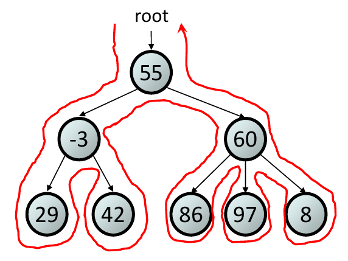
You can also do level order traversals, where you process a level at a time left to right. It has $O(n)$ runtime, assuming you use a $O(1)$ queue.
Algorithm levelOrder(node)
Q <- new empty Queue
if v is null then
return
Q.enqueue(v)
while NOT Q.isEmpty() do
q <- Q.dequeue()
visit(q)
for each child of q do
Q.enqueue(child)
Algorithms on Trees
Almost all algorithms on trees are essentially traversals, except we preform some important operation while visiting. This can help when breaking down unfamiliar algorithms.
Building Trees from Traversals
We can use the pre-order and post-order traversals of a general tree to reconstruct it. Here, I'll assume the traversals are listed pre-order above post-order.
To do this, we take the root element (first node in pre-order or last node in post-order) out of the root element. Then we list the pre-order and post-order traversals without the root. The first node in the pre-order traversal is a child of the root. We then create a block from this child at the top left to the same node in the post-order traversal. All node in this block are children of the found child node. We then repeat ignoring this block to get the next child.
If we want to recreate the tree, we recurse for every child we find.
Binary Trees
Binary trees are just trees where the nodes have a max of 2 children. Traditionally, these are ordered and we call one left and the other right.
ADT / Interface
This has the same interface as a tree, plus the following.
| Operation | Description |
|---|---|
left(p) |
Returns the left child of the node p. |
right(p) |
Returns the right child of the node p. |
sibling(p) |
Returns the sibling of the node p. |
Traversals
We can, again, do everything a tree can do, but we can also do an in-order traversal. This is, again, $O(1)$ assuming the language has a $O(1)$ stack.
Algorithm inOrder(node)
if node is null then
return
inOrder(left(node))
visit node
inOrder(right(node))
Special Binary Trees
We have a few special cases for binary trees that allow us to make some useful assumptions.
Proper Binary Tree / Full Binary Tree / 2-tree
Every non-leaf node has two children.
This gives us count(leaves) = count(non-leaves) + 1.
- Proper Binary Tree

Perfect Binary Tree
A proper binary tree where all leaves have the same depth. This tree contains the most elements possible for the given height of the tree. Perfect trees have the most elements for their height $h$.
This gives us, for a tree with height $h$:
- $2^{h+1} - 1$ nodes.
- $2^h$ leaves.
- $2^{h} - 1$ non-leaves / internal nodes.
- Perfect Binary Tree

Complete Binary Tree
A complete tree is an approximation of a perfect tree. All levels are filled except possibly the last level, which is filled from left to right. Complete trees have the least height among all binary trees with $n$ nodes.
They have nodes $2^h \le n < 2^{h+1}$.
- Complete Binary Tree

Array Based Binary Tree
TODO
Array based implementation
Binary Search Tree (BSTs)
Binary search trees are binary trees where for every interior (non-leaf) node $N$, $left(N) < N < right(N)$. If there interior node has no left or right node, it is vacuously true. This is called the shape property.
Essentially, this means if you do an in order traversal of the tree you get a sorted list.
This means we can use trees for sorting and organization! This let's use search, insert, and manipulate trees using the binary search algorithm ($O(log n)$), giving us a fairly efficient data structure.
Look Up
When you search through a binary search tree, the height determines how many searches you need to do in the worst case.
This should make sense since by looking up you're basically determining the path to find your element. In the worst case, your element is the lowest element (or between the lowest element and its in-order successor/predecessor), so you're having to compare for every node passed.
Insertion
For insertion, we look search for the element. If we find it, we replace it's value with what we want. If we don't find it, we add it to where we ended up looking. (This relies on the fact that, when we search, we go to where the element “should” be.)
This means, in general, insertions increase the height of the tree.
Removal
There are 3 cases you need to handle for removing a node $N$ from BSTs:
- $children(N) = 0$: Just delete $N$.
- $children(N) = 1$: Replace $N$ with its child only child.
- $children(N) = 2$: Replace $N$ with the minimum from the right subtree (i.e.
bottom left on right). We call this the in-order successor
- We could also do max from the left subtree (i.e. bottom right on left, the in-order predecessor), but here we'll only be doing in-order successors because it makes grading easier.
This is basically a lookup (find the element to remove and find the lowest), so it has a runtime based off height.
Runtime
In summary, where $n$ is number of nodes in tree and $h$ is height of tree:
- Look Up: $O(h)$
- Insertion: $O(h)$
- Removal: $O(h)$
For balanced, complete trees, this means that everything is $O(log n)$ because for complete trees $O(h) = O(log n)$. (Because $n \le log_2(h)$)
For unbalanced, non-complete trees, this means that everything is $O(n)$ because $O(h) = O(n)$.
This means the worst case performance for everything is $O(n)$.
Balanceable Binary Search Trees
As we just covered, BSTs are most efficient when they are balanced (e.g. almost complete). Therefore, we can get improved performance if we get try to keep a balanced tree.
- Unbalanced BST

- Balanced BST
- 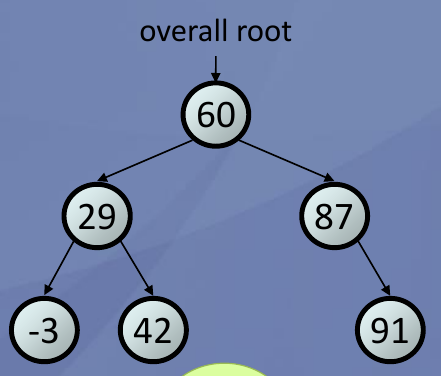
It should be pretty easy to see that the only operations which can make a
balanced tree unbalanced are get and put.
Rotations
To maintain a tree as balanced, we must do rotations. A left rotation is where you take the left child $L$ of a node $N$ and make it so that $L$ is a parent of $N$ and $N$ is the right child of $L$. Vice versa for right rotations.
- Simple BST Rotation

We normally follow trinode restructuring. Where we have 3 important nodes, labeled “a”, “b”, and “c” in in-order traversal order. These are child, parent, and grand-parent (irrespectively). We try to make it so that “b” is the root, “a” is the left child, and “c” is the right child. This is useful because this is the simplest restructuring that reduces the height of the tree by one.
I strongly recommend visualizing these being moved and how the nodes and subtrees shift/disconnect.
- Trinode Rotation #1

- Trinode Rotation #2
- 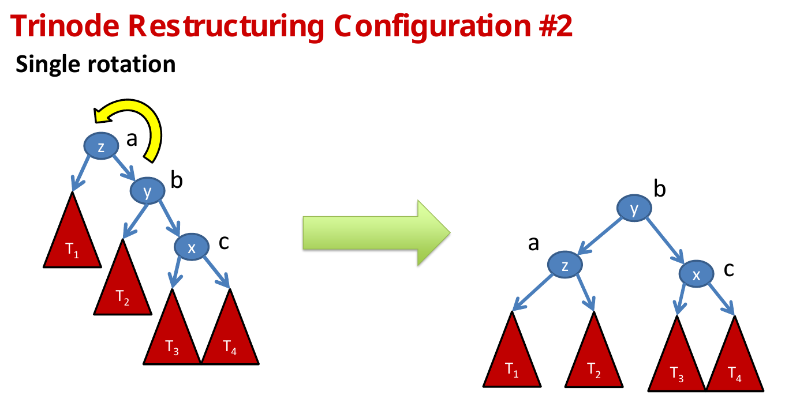
- Trinode Rotation #3

- Trinode Rotation #4

AVL Trees
This was invented by Georgy Adelson-Velsky and Evgenii Landis
AVL Trees have the following properties:
- Height Balance Property: Where, for every node, its children's height differs by at most 1.
The lowest node which violates the height-balance property is the node that violates it. We find the nodes that violate the height-balance property by, after inserting or removing, going up and updating the heights. Once we find one that violates it, mark it. Then, chose its child with a larger height. Do this again; if its children have the same height, choose such that you form a “line”. Make sure that you are labeling nodes correctly by their value. Now, you have “a”, “b”, and “c” (make sure that you have them labeled correctly)
For insertion, since you are only ever adding a leaf at possible a new level, you only have to do one rotation at most. For removal, you can potentially do many as you can be starting from high within the tree.
Intuitively, the AVL tree always makes the most conservative rotations possible.
Make sure you only do the trinode rotations from earlier.
AVL Tree Performance
Temporarily, we'll use $h$ since we haven't derived $h$ in terms of $n$.
- Lookup: $O(h)$
- Trace Down: $O(h)$
- Insert: $O(h)$
- Trace Down: $O(h)$
- Insert at Leaf: $O(1)$
- Trace Up and Update Heights: $O(h)$
- Restructure at most once: $O(1)$
- Rotation: $O(1)$
- Removal: $O(h)$
- Trace Down: $O(h)$
- Remove Node: $O(1)$
- Trace Up and Update Heights: $O(h)$
- Restructure as many $h$ times: $O(h)$
- Rotation: $O(1)$
Now, let's derive $h$ in terms of $n$! We'll find the lowest $n$ for a given $h$. We'll always make the left subtree larger to make analysis easier.
- $h$ and $n$ Visualized
- 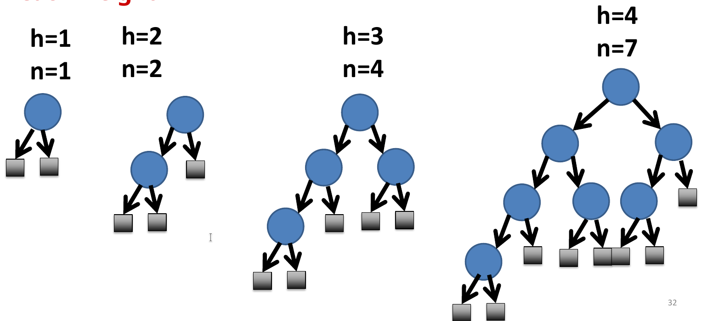
Since we defined the left subtree as always being the larger, let
- $n(h)$ be number of nodes in tree.
- $n(h-1)$ be number of nodes in left subtree.
- $n(h-2)$ be number of nodes in right subtree.
Given $n(1) = 1$, $n(2) = 2$,
$$n(h) = 1 + n(h − 1) + n(h − 2)$$ $$n(h) > 1 + n(h − 2) + n(h − 2)$$ Since we know $n(h-1) \le n(h-2)$ $$n(h) > 2 n(h − 2)$$
Doing this recursively, we get $$n(h) > 2 n(h − 2)$$ $$n(h) > 4 n(h − 4)$$ $$n(h) > 8 n(h − 6)$$
You can probably see (and probably already knew), that this means
$n(h) > 2i * n(h−2i)$ for $i > 0$ and $h − 2i \ge 1$ (since we know)
Splay Trees
Splay trees are trees which implement a splay operation, which reorganizes
the tree. It does this by moving itself to be the root without breaking the
binary search property (thing move to front heuristic). Every operation
(lookUp, insert, delete) calls splay.
Note: Splay trees do not make any guarantees about the height of the tree (unlike AVL trees). This makes analysis significantly harder.
splay does this by doing repeated rotations (until the node is in sorted
order). There are three cases:
p == tree.root(): Stop.parent(p) == tree.root(): Perform zig.phas parentuand grandparentw:pandware same direction children: Perform zig-zig. These are like trinode restructuring that go a “step too far”.pandware opposite direction children: Perform zig-zig. These are just trinode restructring.
- Right Rotation: “Zig”

- Left Rotation: “Zig”
- 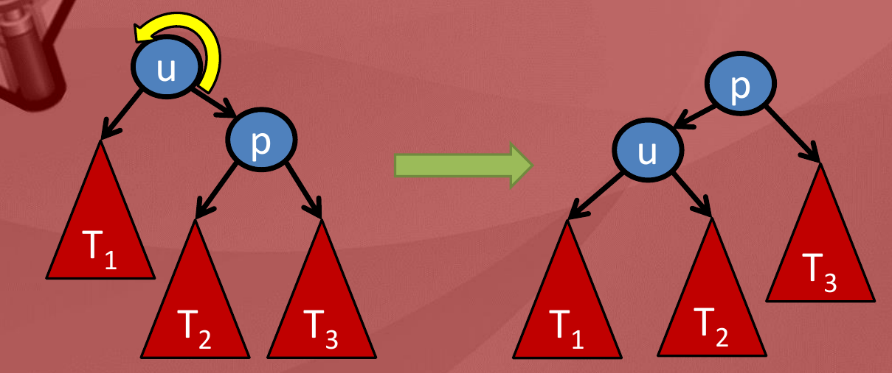
- Right Rotation: “Zig-Zig”
- 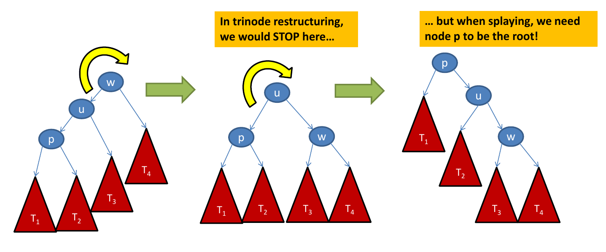
- Left Rotation: “Zig-Zig”

- Right Heavy: “Zig-Zag”

- Left Heavy: “Zig-Zag”

Insertion
When we insert a node, we insert it like we would a binary search tree. We then splay the just inserted node.
Removal
When we remove, we set the value of the node with its in-order successor's value (this can be itself if it has no in-order successor). We then remove the in-order successor's original node. Now, we splay the parent of the removed node.
Look Up
When we look up a node, we splay the looked up node.
Other Variations
Here, we use a variant of a splay tree called a “bottom up” splay tree. This means we insert into the bottom of the tree and then rotate as we go up. We could also do a “top down” splay tree, where we rotate as we go down.
Why?
Moving everything might seem pointless / too much. They are most often used when locality matters. That is, if you want some node A, you might also be interested in its neighbors. A good example is looking for a book in a library.
Runtime Analysis
TODO: re notate
The worst case scenario for a splay tree is where you insert keys in ascending or descending order. This yields a perfectly unbalanced tree (i.e. $h = n$).
- Look Up: $O(h)$
- Trace down: $O(h)$
- Splay to the root: $O(h)$
- Insert: $O(h)$
- Trace Down: $O(h)$
- Insert new leaf: $O(1)$
- Splay to Root: $O(h)$
- Because you need to do at most $h$ splays.
- Delete: $O(h)$
- Trace Down: $O(h)$
- Delete leaf: $O(1)$
- Splay to Root: $O(h)$
- Because you need to do at most $h$ splays.
What makes splay trees annoying to analyze is that they have a worst case of $O(h) = O(n)$ for everything. However, this is only in the case that you are operating on it only in ascending order, so it's misleading to say this. Therefore, we must use amortized analysis to get the average case.
We care mostly about how costly splaying is in a splay tree. This is because we do it at every operation.
First, let's define a bunch of variables:
- Let $T$ be a splay tree with $n$ keys.
- Let $w$ be some node in $T$.
- Let $size(w)$ be the number of nodes in the subtree rooted as $w$.
- $size(w) = 1 + size(left(w)) + size(right(w))$.
- Let rank $r(w) = log_2(size(w))$.
Rank is basically a measure of the balance of your tree. Lowering rank means better lookup. To analyze the runtime, let's break this down into scenarios and analyze the change in rank ($\Delta r$). $\Delta r$ is, essentially, our “savings” from doing the rotation. This savings comes from us making the tree more balanced, so it is easier to look up in future.
Zig-Zig
Suppose we have nodes $x$, $y$, and $z$, that are being involved in a splay operation. Let $r’(w)$ be the rank after splaying.
- Zig-Zig Rank Analysis

$$r’(x) = r(z)$$ $$r’(y) \le r’(x)$$ $$r(x) \le r(y)$$
2-4 Trees
2-4 trees are actually a special type of [A-B Trees]. They can have more than 2 children.
Every inner node in a 2-4 tree has between 2 and 4 children and 1 and 3 children, respectively.
A 2-4 tree has the following properties:
- All leaves have the same depth and contain 1, 2, or 3 keys.
- That is, it's always a perfect tree!
- An interior node can be:
- A 2-node: 1 key and 2 children.
- A 3-node: 2 key and 3 children.
- A 4-node: 3 key and 4 children.
- It is a search tree.
- For 2-node, $key(left) < K_1 < key(right)$
- For 3-node, $key(left) < K_1 < key(mid) < K_2 < key(right)$
- For 4-node, $key(left) < K_1 < key(mid_1) < K_2 < key(mid_2) < K_3 < key(right)$
- Essentially, it's sorted.
- Types of Nodes in 2-4 Tree

To always maintain perfect balance it grows up.
Look Up
Look up is fairly simple. We try to find what values we sit between in the current node, stopping if we find our node. If we don't find out node, we trace down to the node that is between the two nodes our value sits between. We then repeat.
Insertion
Insertion starts by searching for your element, stopping when you find it or reach a leaf. You then insert the element into the leaf in correct order. Then, you check for overflow.
Overflow occurs when your node has 4 elements. To resolve this, split the node, pushing the 3rd up to the parent (in correct order) and put the 1st and 2nd in their own node and the 4rd in its own node. We then check the parent for overflow and repeat as necessary.
Note: We push 3rd up for consistency. You could just as easily push your 2nd up.
Removal
Removal is the most complicated operation. When we remove, we search for the element we want to remove. If it is a leaf node, we just remove the element from the node. If it is an internal node, we replace the element with its in order successor and remove the in-order successor from its original node. We then check the node we just removed an element from for underflow.
Underflow occurs when your node has 0 elements. We have three ways to resolve this: deletion, transfer, or fusion.
- Deletion: When the node is the root, we know the root is no longer necessary, since we only propagate removals up when we have a single child. (see fusion)
- Transfer: When the node has at least one 3-node or 4-node sibling, it just rotates the adjacent child and parent around. (see image below)
- Fusion: When the both node's siblings are 2-nodes, it must must fuse with its parent
A-B Trees
A-B trees are multi-way search trees are a generalization of [2-4 Trees]. This should be easy to understand, since 2-4 was somewhat arbitrary.
A is the minimum number of children. B is the maximum number of trees.
B Trees
B trees are a type of A-B tree with $b = 2a - 1$. They only store data in the nodes.
B trees are best known for being used to efficiently access storage. This is great because accessing storage is incredibly expensive. The idea is you store the address that points to the next storage node. You then do searches to find where you should next access memory until you reach the final memory block.
They are great because they can be very wide, meaning we don't need several accesses to physical storage to reach the nodes that actually hold the data. Additionally, most of the time, starting access to storage access is the most expensive process. This means you can get a lot of data in a single access, another benefit.
Red-Black Trees
A summary of the trees we've learned so far:
- AVL Trees: Require $O(log n)$ restructuring after deletion.
- Splay Trees: Cannot guarantee $O(log n)$ performance on any single operation because there are no guarantees about height.
- 2-4 Trees: Require $O(log n)$ split when inserting or $O(log n)$ fusion when deleting.
Red-black trees have none of the above downsides, requiring only $O(1)$ structural changes after insertion or deletion, making them more performant than any other tree we will learn. However, they are also the most complicated tree we will learn.
Note: Red-black trees are really a BST implementation of 2-4 trees. More on that later.
- Red-Black Tree

Properties of Red-Black Trees
- Root Property: Root is black.
- Leaf Property: Every leaf is black.
- If you use dummy nodes, this becomes easier to see.
- Red Property: The children of red nodes are black.
- Depth/Black Property: All leaf nodes have the same number of black ancestors.
(“black depth”)
- More generally, from any starting node $N$, all paths to the dummy leaf descendants contain the same number of black nodes.
These properties guarantee that the shortest path (all black) is no more than twice the length of the shortest path (alternating red and black). This is how we make our balance guarantee. In other words
$$h \le 2d$$
Connection to 2-4 Trees
Red-black trees are 2-4 trees because, given a red-black tree, we can construct a 2-4 tree. The inverse is not always true.
You do this by merging every red node with its parent, storing its entry in the parent and making all its children the children of the parent.
- Red-Black Tree to 2-4 Tree
- 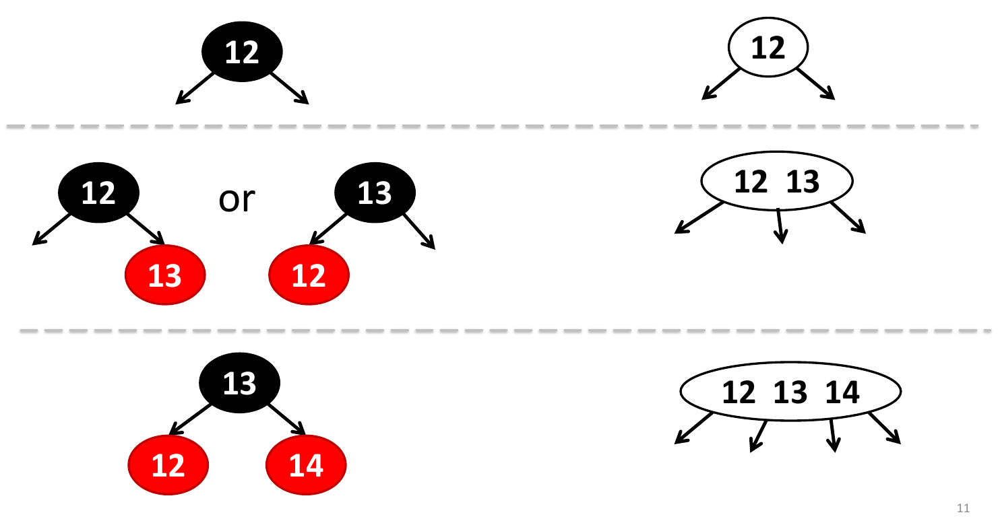
Look Up
Look up in a red-black tree is the exact same as for a general BST.
- Red-Black Tree Lookup
- 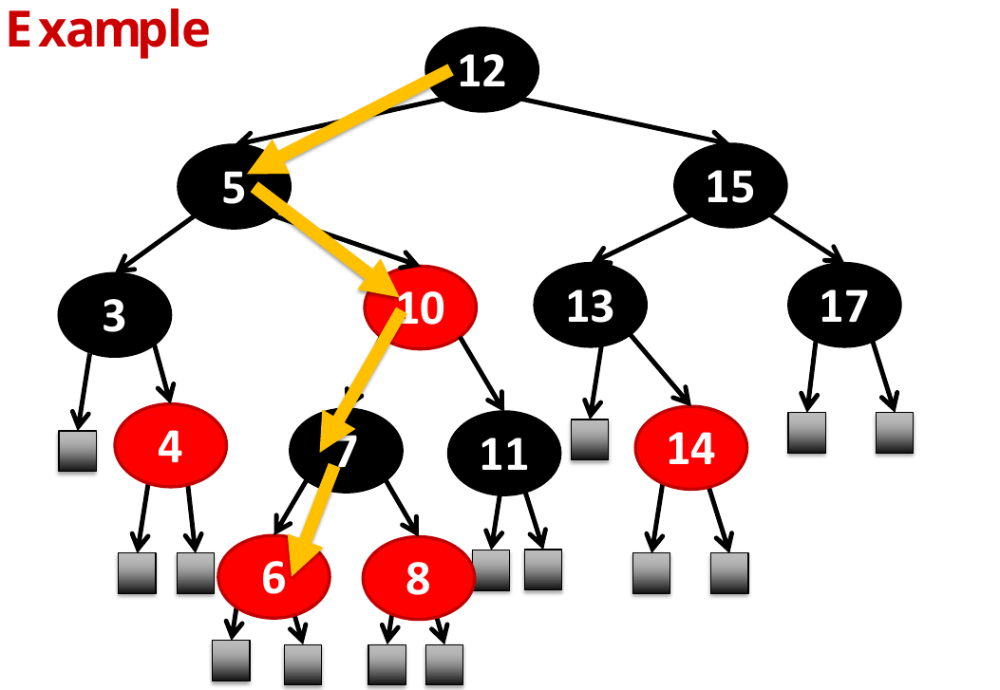
Insertion
We start insertion using the traditional BST insertion operation. Then, we determine the color.
- Inserting at Root: Black.
- Otherwise: Red.
For free, this preserves:
- Root property since we insert the root as black
- Leaf property, since use use black dummy nodes.
- Depth property, since we only care about black depth and we just inserted red.
This means the only property we may have violated is the red property. If the parent of the inserted node is black, we have not violated the red property. Otherwise, we have a double-red violation of the red property, which we must resolve.
Resolving Double-Red Violations
First off, names. Name the node we just inserted $x$, its parent $y$, its grandparent $z$, and its uncle $s$.
Resolving this violation is broken into two cases.
- Case 1: $s$ is black.
- Recall that we already know $y$ is red because we have a double-red violation and $z$ is black by the red property.
- Case 2: $s$ is red.
- Again, recall that $y$ is red and $z$ is black.
In case 1, we resolve this with a single ($O(1)$) trinode restructuring of $x$, $y$, and $z$. You then recolor whatever your $b$ was (root of subtree after restructuring) to be black and your $a$ and $c$ red. This ensures that both sides follow the depth property, since the black $z$ may no longer be the root, we want to make sure its previous descendants still follow the depth property. We have now resolved the issue and do not need to do any further checks.
In case 2, the double red may propagate, but we don't have to do any restructuring. This corresponds to a split in a 2-4 tree! (Although not always the 3rd element split we do.) To resolve this, we recolor $y$ and $s$ black (i.e. flip the color of the 2 levels above) and recolor $z$ black, unless it is the root. We then check $z$ for a double-red violation and resolve it accordingly.
- Case 2 vs 2-4 Tree

Node: In the worst case, we must do $O(h)$ recolorings in the worst case, where we always have case 2 violations. However, we consider this a trivial operation (i.e. not the essential operation).
Removal
We start removal using the traditional BST removal operation. Recall that, for deleting internal nodes, we replace the value of a node with the value of its in-order successor and then we delete the in-order successor node.
If we removed a red node, we have finished, since black depth has not been changed.
If we removed a black node, we have violated the black depth property. We mark this by marking the dummy sentinel/NIL node as a double-black to account for the missing black ancestor.
Resolving Double-Black Violations
First off, names. Name the double black node $p$, its parent $z$, its sibling $y$, and one of its siblings children (i.e. nephews) $x$ (it doesn't matter which one).
TODO: Does it really not matter?
Resolving the violation is broken into two cases.
- Case 1: $y$ is black and has a red child $x$.
- Case 2: $y$ is black and both its children are black.
- Case 2: $y$ is red.
In case 1, we resolve this with a single ($O(1)$) trinode restructuring of $x$, $y$, and $z$. We then recolor $a$ and $c$ to black and $b$ to be $z$'s original color. Essentially, we just added a black depth to $p$, and then made sure that we didn't affect $y$'s black depth. This corresponds to a transfer in a 2-4 tree.
- Double-Black vs Transfer

In case 2, we recolor $y$ from black to red and recolor $z$ to black. If it already was black, make it double black and resolve that issue. (Unless it is the root, then just reduce it because then everything is reduced.) Basically, we just pushed the black up a level.
- Double-Black When Red vs Fusion

- Double-Black When Black vs Fusion

In case 3, we rotate $y$ around $z$ and recolor $y$ to black and $z$ to red. This doesn't actually improve anything directly, but it should get us one step closer. Now, you just try to resolve the double black again.
Performance
- Look Up: $O(h)$
- Trace Down: $O(h)$
- Insert: $O(h)$
- Trace Down: $O(h)$
- Insert new node: $O(1)$
- Restructuring / Recoloring: $O(h)$
- Case 1: $O(1)$
- Case 2: $O(h)$
- Remove: $O(h)$
- Trace Down: $O(h)$
- Remove node: $O(1)$
- Restructuring / Recoloring: $O(h)$
- Case 1: $O(1)$
- Case 2: $O(h)$
- Case 3: $O(h)$
- Since it may lead to case 2.
Proofs
We want to reparameterize our runtimes to be in terms of $n$ instead of $h$. To do this, we show that $n_{interior} \ge 2^{d-1}$ using a proof by induction.
In our base case, $d = 1$ and $n_{interior} = 1$. Therefore, $n_{interior} \ge 2^{d-1} = 2^{0} \ge 1$ holds.
Now, we split our inductive case into three cases, based off of the color of the children of the black node. This is easiest to see by converting the red black tree into a 2-4 tree and then analyzing the number of keys.
- 2-Node Equivalent
- 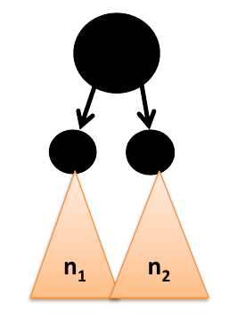
$$n_{interior} \ge n_1 + n_2 + 1$$ $$\ge 2^{d-2} + 2^{d-2} + 1$$ $$\ge 2*2^{d-2} + 1$$ $$\ge 2^{d-1} + 1$$
- 3-Node Equivalent

$$n_{interior} \ge n_1 + n_2 + n_3 + 2$$ $$\ge 2^{d-2} + 2^{d-2} + 2^{d-2} + 1$$ $$\ge 3*2^{d-2} + 2$$ $$\ge 2^{d-1} + 2$$
- 4-Node Equivalent
- 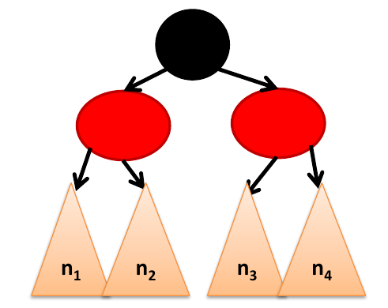
$$n_{interior} \ge n_1 + n_2 + n_3 + n_4 + 3$$ $$\ge 2^{d-2} + 2^{d-2} + 2^{d-2} + 2^{d-2} + 3$$ $$\ge 4*2^{d-2} + 3$$ $$\ge 2^{d} + 3$$
In the smallest of these cases (case 1), we have $n_{interior} \ge 2^{d-1} + 1$, which is greater than $2^{d-1}$.
We have now proven that, for every red black tree,
$$n_{interior} \ge 2^{d-1}$$
Using $h \le 2d \implies \frac{h}{2} \le d$ and $n \ge 2^{d-1}$, we get
$$n \ge 2^{\frac{h}{2} - 1}$$ $$log_2 n \ge \frac{h}{2} - 1$$ $$\frac{h}{2} \le log_2 n + 1$$ $$h \le 2 log_2 n + 2$$
Now, reparameterizing our runtimes, we get
$$O(h) = O(log n)$$
Height
The proof for heights uses the known height of a 2-4 tree and making connections between red-black trees and 2-4 trees. This is an alternate way to prove runtime.
Let $T$ be a red black tree of $n$ entries with height $h$ and black-depth $d$. Let $T'$ be the corresponding 2-4 tree of height $h'$.
We know $d = h’ + 1$ and $h’ \le log_2 n$, from the connection between 2-4 trees and red-black trees. We know $h \le 2d$, by the property of red-black trees. This gives us
$$h \le 2d$$ $$h \le 2(h’ + 1)$$ $$h \le 2(log_2 n + 1)$$
This shows that the height of a red-black tree is $O(log n)$.
Red-Black Tree Summary
- Insert:
- Case 1: Sibling $s$ of parent $y$ is black.
- Rotations: 2 (trinode restructuring).
- Recolorings: Constant #.
- Case 2: Sibling $s$ of parent $y$ is red.
- Rotations: 0.
- Recolorings: Constant #, but may propagate.
- Case 1: Sibling $s$ of parent $y$ is black.
- Delete:
- Case 1: Sibling $y$ of $p$ is black and has a red child $x$.
- Rotations: 2 (trinode restructuring).
- Recolorings: Constant #.
- Case 2: Sibling $y$ of $p$ is black and both of $y$'s children are black.
- Rotations: 0.
- Recolorings: Constant #, then case 1 or 2.
- Case 3: Sibling $y$ of $p$ is red.
- Rotations: 1.
- Recolorings: Constant #, then case 1 or 2.
- Case 1: Sibling $y$ of $p$ is black and has a red child $x$.
Hash Maps
Hash maps are great if you don't care about memory efficiency and do care a lot about runtime efficiency. We especially use them when key space ($K$) is huge (e.g. compiler symbol tables and IP addresses) and lookup and insertion is common, with few deletes, since deletion is more difficult.
Hash maps are expected to have $O(1)$ runtime for all map functions. However, hash maps are fairly memory inefficient, due to maintaining a table much larger than the actual map.
Idea
The idea is we have an array of size $m$ and a hash function that that converts your elements into an integer from $0$ to $m - 1$. This array holds lists of our given elements.
For insertion, you get the index of your new element by hashing it and then add your element at to the list at the given index.
For access, you get the index of your element by hashing it and then search for your element in the list at the given index.
For removal, you get the index of your element by hashing it and then remove your element from the list at the given index.
Hash Function
Normally, your hash function is split up into two parts. You create a hash code, which can be arbitrarily large. Then, you compress it to be in the appropriate range (normally using modulus).
Hash Code
There are a few different strategies. Here, we'll cover additive, polynomial, and cyclic-shift. For simplicity, we'll only be hashing strings, but you could easily extend this for other structured data.
Additive
For a key of $k = c_0 c_1 c_2 … c_{n-1}$. Our hash function is
$$f(k) = \sum_{i=0}^{n-1} c_i$$
This has the issue where there are a ton of collisions due to anagrams.
Polynomial
For a key of $k = c_0 c_1 c_2 … c_{n-1}$. Our hash function is
$$f(k) = \sum_{i=0}^{n-1} c_i * r^i$$
Where $r$ is some constant that has been optimized either mathematically or experimentally.
This might easier to show via accumulation
f = lambda s: reduce(lambda acc, c: r * acc + ord(c), s)
Cyclic Shifting
This is the same as polynomial hashing, but instead of accumulating by multiplying the accumulator by $r$, we cycle the accumulator by $n$ bits before we sum the current hash.
In practice, we can do the cycling using bit shifts.
f = lambda s: reduce(lambda acc, c: ((acc << n) | (acc >> m - n)) + ord(c), s)
A good value for $n$ when hashing English words is 5. This was determined experimentally.
Compression Function
A compression function takes some random integer $f(k)$, which is the hash of key $k$, and returns an integer $h(k)$ in the range ${0..m-1}$
There are a few different strategies. Here, we'll cover division, multiply-and-divide (MAD), and golden ratio method.
Division Method
The division method is immediately obvious. It's what you think of. Just mod the numbers!
Given hash table of size $m$ and a hash code $f(k)$.
$$h(k) = mod(f(k), m)$$
Guidelines
Choosing $m$ is very important and depends on your input space and your $r$ (assuming you did polynomial hashing).
You should not choose $m$ that evenly divides $r-1$. Suppose $m = r-1$.
$$h(ABC) = mod(f(ABC), r-1)$$ $$= mod(67r^2 + 66r + 65, r-1)$$ $$= mod(67((r-1)^2+2(r-1)+1) + 66((r-1)+1) + 65, r-1)$$ $$= mod((67(r-1)+134+66)(r-1) + 67 + 66 + 65), r-1)$$ $$= mod(65+66+67, r-1)$$
This basically means all anagrams will be identical, which is what we wanted to avoid by using polynomial hashing.
You should chose $m$ to be prime because that avoids the issues above (with polynomial keys).
You should not chose $m$ that divides $r^k \pm x$ for $k = 1, 2$ and $x = 1, 2$. Suppose $m = r$.
$$h(ABC) = mod(f(ABC), r)$$ $$= mod(67r^2 + 66r + 65, r)$$ $$= mod((67r + 66)r + 65, r)$$ $$= mod(65, r)$$
This basically means all words that start with the same first letter will be identical.
MAD Method (Multiply-And-Divide)
This method may eliminate some patterns in a set of hash codes due to being slightly more sophisticated.
$$h(k) = mod(\alpha f(k) + \beta, m)$$
Where $m$ is prime, $\alpha > 0$, and $\beta \ge 0$.
Golden Ratio Method / Fibonacci Hashing
Has efficient compression for any $m$, not just primes.
In general, you divide your hash by the golden ratio. Then you take the fractional part and scale it by $m$ to get the index. It's actually really intuitive! Don't get caught up in the symbols.
$$h(k) = \lfloor m{\frac{f(k)}{\phi}} \rfloor$$
Where ${x}$ is the fractional part of $x$.
Note: Sometimes, in code, we prefer to multiply by the inverse of $\phi$.
Why This is Good
This is generally the best compression method because it depends on all characters, meaning permutations are unlikely to collide.
This compression function has also been proven to evenly distribute keys, assuming evenly distributed key space. To throw out some bigs words, keys with small hamming distance in the key space are separated largely and randomly within the compression space.
An intuitive proof of this is that starting with $n = 1$ gives you a fraction which is $\phi^{-1}$. Going to $n + 1$ falls into the segment of greatest length, dividing the segment by the golden ratio.
- Golden Ratio with $n = 1$
- 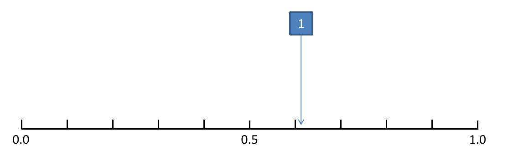
- Golden Ratio with $n = 2$
- 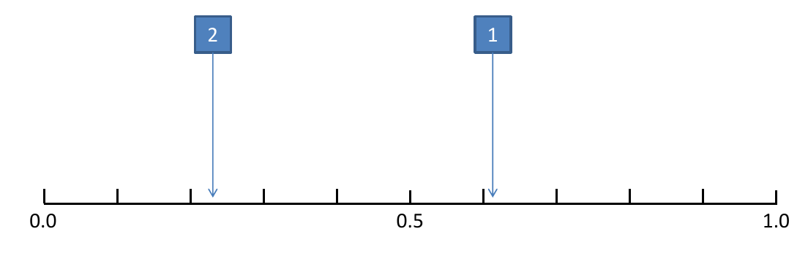
- Golden Ratio with $n = 3$
- 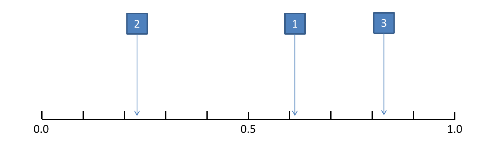
Note: This also has the benefit that if $m = 2^i$, you can calculate this very quickly on computers by performing some shortcuts using binary.
Java's hashCode()
In Java, we compute the initial hash code (no compression), using the
hashCode() method.
Java has the invariant that A.equals(B) necessarily implies A.hashCode() == B.hashCode(). However, the reverse is not necessarily true. Therefore, if you
override equals(), you almost certainly need to override hashCode().
There exist the following guidelines/recommendations for implementing
hashCode() in Java.
- Store some constant nonzero value, say, 17, in an
intvariable calledresult. - For each field taken into account by the equals method
- Compute an
inthash codecfor the field:- If the field is a
boolean, compute(f ? 1 : 0). - If the field is a
byte, char, short, or int, compute(int) f. - If the field is a
long, compute(int) (f ^ (f >>> 32)). - If the field is a
float, computeFloat.floatToIntBits(f). - If the field is a
double, computeDouble.doubleToLongBits(f), and then hash the resulting long as above - If the field is an object reference and this class’s equals method compares the field by recursively invoking equals, recursively invoke hashCode on the field. If the value of the field is null, return 0 (or some other constant, but 0 is traditional)
- If the field is an array, treat it as if each element were a separate field. That is, compute a hash code for each significant element by applying these rules recursively, and combine these values. If every element in an array field is significant, you can use one of the Arrays.hashCode methods added in Java 1.5.
- If the field is a
- Combine the hash code
ccomputed in the previous step into result as follows:result = 31 * result + c;
- Compute an
- Return
result.
Hash Collision Resolution
We can't guarantee that we never have collisions. So, how do we tell our program where to look next?
There are two broad categories:
- Chaining: Collided keys are linked together.
- Open Addressing: Some algorithm determines how to search through the table.
Here's a quick comparison of the benefits of each.
- Chaining: Removing is simple, requires more memory for small data.
- Open Addressing: No dynamic memory management, more processor locality.
Separate Chaining
Standard Separate Chaining
Items are not stored in the buckets of the hash table. Instead, the buckets store pointers to a secondary map. (This means its a 2-level data structure.)
To use this, you hash your key, get the map at the hash, and then operate on that smaller map.
- Separate Chaining

The advantages of this is that it's really easy to implement and has good performance. The disadvantages is that you need references and dynamic memory management.
Coalesced Chaining
We consider coalesced chaining an example of separate chaining. It's actually a hybrid of open addressing and separate chaining!
The goal here is, like open addressing, to avoid dynamic memory management and pointers, but to maintain the benefits of chaining.
We do this by making our table contain entries which contain a piece of data and then a “next” pointer/index. We first insert the element directly into the table, with a no next. If we get a collision, we check the “next” and follow it. If it does not have a next, we start searching from the start of the table for an empty slot to insert into. If it does have a next, follow it and try to insert there and repeat as necessary.
As you can see, this means that our displaced keys (search from beginning to insert) take up space meant for our keys, since we just start from the front, causing more collisions.
- Coalesced Hashing
- 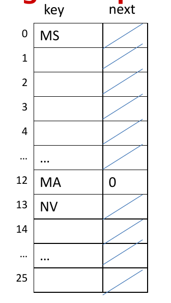
Coalesced Chaining with a Cellar
Coalesced chaining with a cellar is just coalesced chaining, except that our displaced keys initially go into a cellar meant exclusively for displaced keys. Whenever the cellar runs out of space, you just move outside of the cellar.
For good performance, make your cellar ~14% of $m$.
- Coalesced Hashing with a Cellar

Open Addressing
Linear Probing
In linear probing, you store items directly into the hash table. If you get a collision during insertion, you look at the next index and try to insert there. For searching, you get the hash. You then look at that index. If the slot is empty, you've failed. If the slot isn't empty but you haven't found it, take some constant size step (normally one) and then check that slot.
Double Hashing
Double hashing is the exact same as linear probing. However, instead of using a constant step size, you use some second hashing function to determine the step size.
Make sure the secondary hash is never 0.
Performance
For hash tables, expected performance often depends on the load factor $\lambda$.
$$\lambda = \frac{n}{m}$$
Where $n$ is the number of items in the map and $m$ is the number of items in the map.
We also consider the number of probes required in the map. This just means accesses. $S(\lambda)$ is the average number of probes required by successful lookup. $U(\lambda)$ is the same except for unsuccessful lookups.
Here's a quick breakdown of the performance. We won't derive these here. $S$ is the average runtime of a successful lookup. $U$ is the average runtime of an unsuccessful lookup. These all assume perfect hash functions (i.e. ones which evenly distribute everything.)
Separate Chaining
$$S(\lambda) \approx 2 + \lambda / 2$$ $$U(\lambda) \approx 1 + \lambda$$
Linear Probing
$$S(\lambda) \approx \frac{1}{2}(1 + \frac{1}{1-\lambda})$$ $$U(\lambda) \approx \frac{1}{2}(1 + \frac{1}{(1-\lambda)^2})$$
Double Hashing
$$S(\lambda) \approx \frac{1}{\lambda} ln(\frac{1}{1-\lambda})$$ $$U(\lambda) \approx \frac{1}{1-\lambda}$$
Heap
Heaps are special binary trees that have the following properties:
- Partial Order Property: Every node's child is either smaller than it (min
heap) or larger than it (max heap). This has the result of making the
smallest element in the heap on top, for a min heap, and the largest element
in the heap on top, for a max heap.
- Other people call this the heap property.
- Complete Binary Tree Property: Heaps are always complete trees. Meaning they
have the smallest height possible for their number of elements.
- Therefore, $h = log(n)$.
- Simple Heap

The special thing about heaps is that all paths from root to leaf are in sorted order, in ascending order for a min heap and descending order for a max heap.
Additionally, we only interact with the root of the heap. That is, the largest or smallest element from the collection.
Removing
When we remove the root of the heap, we the change value of the root with the value of one of the leaves and remove that leaf node. (Here, we pick the rightmost leaf.) Now we might have just violated the partial order property, so we perform a down heap on the root.
When performing a down heap, we swap the current node with its smallest child, until we are smaller than the smallest child (i.e. the partial order property is no longer violated).
Insertion
When we insert into the heap, we insert into one of the leaves. Here, we insert into bottom level as far left as we can, to line up with remove.
When we do this, we may have just violated the partial order property. To resolve this, we perform an up heap on the node just inserted.
When performing an up heap, we swap the current node with its parent child, until we are larger than the parent. (i.e. the partial order property is no longer violated).
Array Based Implementations
This may surprise you because we normally create trees using linked nodes. However, since heaps are complete trees, we don't waste as much memory with huge gaps, so it makes more sense to use an array. Also, if you look at an image, it makes a lot of sense.
- Array Based Heap
- 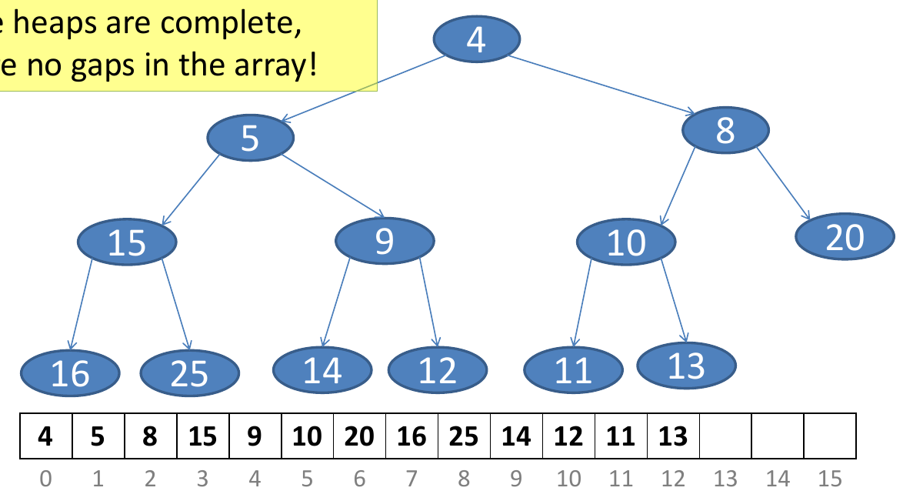
As you can see, the array is just a level-order traversal of the tree! You can
also see why we remove the bottommost rightmost; it's just size() - 1. You
can also see why we insert into the bottommost leftmost empty position; its
just size().
Finally, doing it this way doesn't make traditional up heaping or down heaping any harder.
Priority Queue
Priority queues are a way to organize entries based off some priority. It is not related to queues whatsoever. This is used a lot in schedulers, packet routers, etc.
Here, we treat priority like a key. However, as you could probably guess, we allow multiple things of the same priority. We treat the object like a value.
Recall the total order relation's (i.e. $\le$) properties:
- Reflexive: $k \le k$
- Antisymmetric: $k_1 \le k_2 \land k_2 \le k_1 \implies k_1 = k_2$
- Transitive: $k_1 \le k_2 \land k_2 \le k_3 \implies k_1 \le k_3$
ADT / Interface
| Operation | Description |
|---|---|
insert(k, v) |
Adds the entry with key K and value V to the priority queue |
min() |
Returns, but does not remove, the entry with the smallest key |
deleteMin() |
Removes and returns the entry with the smallest key |
size() |
Returns the number of entries in the priority queue |
isEmpty() |
Returns true if the priority queue is empty; otherwise, returns false |
List Based Implementations
List based implementations definitely are not the best. But they are simple to understand.
For sorted lists, whenever we insert an element, we insert it in sorted order. This yields $O(n)$ insertion but $O(1)$ removal.
For unsorted lists, whenever we remove an element, we make sure to remove the min element. This yields $O(1)$ insertion but $O(n)$ removal.
Heap Based Implementations
Often, we implement priority queues using heaps. It should be pretty easy to see the parallel. You literally just create the concept of a custom “entry” containing your priority and data. Then, you just min/max on the heap using the entry.
Adaptable Priority Queue
An adaptable heap is a more pragmatic, less perfect heap. Basically, this just allows you to remove arbitrary values and update priorities of values. Here, we also include updating the value of a node.
ADT / Interface
This also supports all operations on a traditional priority queue.
| Operation | Description |
|---|---|
remove(e) |
Removes and returns entry e from the priority queue |
replaceKey(e, k) |
Replaces the key of existing entry e |
replaceValue(e, v) |
Replaces the value of the existing entry e |
Location-Aware Heap Implementation
We could search for elements in our heap whenever we want to operate on arbitrary elements. Alternatively, we can allow for instant access by making the entries in the heap know their index. This allows for random access, but it does mean we have to keep it updated.
Sets
Sets are super simple. They are unordered, finite collections of elements without duplicates. They are just like mathematical sets. They're optimized for membership tests.
They're normally implemented like maps with no associated value. If you're literally wrapping existing maps, you either always insert null or the same thing as the key.
ADT / Interface
| Operation | Description |
|---|---|
add(e) |
Adds the element e to the set (if e is not already present in the set). |
remove(e) |
Removes and returns the element e from the set (if e is present in the set). |
contains(e) |
Returns true if the set contains the element e; otherwise, returns false. |
addAll(T) |
Updates the current set to also include all elements contained in the set T (also called “union”). |
retainAll(T) |
Updates the current set to keep only those elements that are also elements in T (also called “intersection”). |
removeAll(T) |
Updates the current set to remove any of the elements that are contained in T (also called “subtraction”). |
size() |
Returns the number of elements in the set. |
isEmpty() |
Returns true if the set contains no elements. |
Disjoint Sets
Disjoint sets are split into two main parts. There's the universe set, which holds all disjoint sets. There's the disjoint subsets / splits which partition the universal set.
If this sounds familiar, it should. These are covered in discrete mathematics when discussing how you partition a set. This is just a computer implementation.
For this class, each disjoint subset has a specific identifier element. We can pick these arbitrarily because its unimportant.
ADT / Interface
These all return pointers to the sets/nodes.
| Operation | Description |
|---|---|
makeSet(e) |
Creates a disjoint set that contains the element e, then returns the position that identifies the set. |
union(s, t) |
Merges the disjoint sets that contain positions s and t. |
find(e) |
Returns the position of the identifier for the disjoint set that contains the element. |
Applications
Disjoint sets are useful in graph theory. If you have a set of nodes and graphs made up of subsets of those nodes, you can determine which graphs are combined by whether or not they have any intersection (i.e. if they're disjoint sets or not).
Up-Tree Forest
Up-trees are just normal trees except that the links point to the parents (up) instead of to the children (down). We still call oldest parent the root!
A forest is just a set of disjoint trees.
- Up-Tree Forest
- 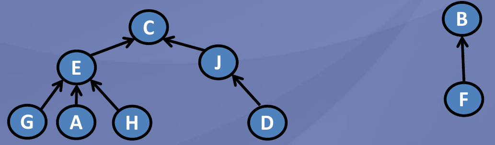
We implement disjoint sets like this to have efficient find and union. To
help us with this, we use linked general trees.
For us, each tree keeps track of its parent and its number of children (count) so that we can do a balanced union.
makeSet
Just create a new tree node with its parent as itself. We do the weird parent thing to make implementation simpler?
union
Find the root of both $s$ and $t$. Call these $r_s$ and $r_t$. Then, we need to merge the roots. We could do this arbitrarily by making one of them the parent. But for this class we use the heuristic by making the node with more successors (i.e. larger count) be the parent so that we stay roughly balanced.
find
Take the node and then walk to its root.
We can do path compression find, where we update the parent pointer of everything along the path from the node to the parent to point to the parent. This effectively flattens the tree, making it faster in the future.
Implementation Difficulties
Since up-trees only have parent pointers, its pretty difficult to individually access the elements, since you have an unknown number of required handles to get every element. (The number of handles required would be the number of leafs!)
Auxiliary Map
Along with your disjoint sets, you have another map that maps from the elements to the nodes. This requires more memory and everything.
Array Representation
If you can convert your elements to integers, you can store the parent index in the slot. For roots, you store the negative count.
Basically, this is just a hash table that points to the parent index of the hash table.
Graphs
- Simple Undirected Graph

- Simple Directed Graph
- 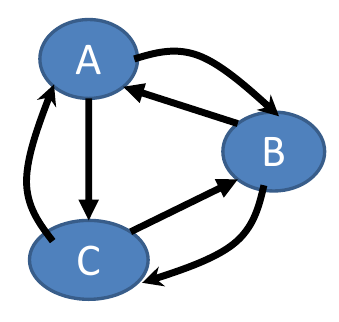
Graphs are discussed using set-theoretic terms. Essentially, graphs are just sets of vertices and edges.
- Graph: Set of vertices and edges.
- Here we mean specifically undirected graph.
- Digraph: Set of vertices and arcs.
- Here we mean specifically directed graph.
- Vertex: Node that can contain data.
- Edge: Unordered pair of vertices.
- To show they are unordered, we notate them ${u, v}$.
- Arc: Ordered pair of vertices.
- We normally call arcs edges.
- To show they are ordered, we notate them $(u, v)$.
- Self Loop: Edge with the same vertex as both endpoints.
- Incident Edges: All edges on a certain vertex.
- Adjacent Vertices: Vertices connected by a single edge.
- Degree: Number of connected edges on a vertex.
- Complete Graph: Graph with edge between every distinct pair of vertices.
Paths
Paths are fundamental to understanding and analyzing graph.
- Path: A sequence of edges describing how to move through the graph.
- Simple Path: A path where all vertices are distinct.
- Cycle: A path that starts and ends on the same vertex, with no successive edges being identical. In other words, you can't forwards and then back.
Subgraphs
- Subgraph: Graph that is made up of only vertexes and edges of some other graph.
- Spanning Subgraph: Graph that has all of the vertexes but not all of the vertexes of some other graph.
Many times, you can break up a graph into a smaller simpler graph. If you can prove/analyze properties of the smaller, simpler graph and then apply those to the parent graph, it makes your job simpler.
Connections
It's often beneficial to think about how connected a graph is. This makes certain problems way easier to analyze.
For an undirected graph, we use the following terms
- Connected Graph: From any vertex, it is possible to find a path to any other vertex.
- Maximally Connected Graph: A connected graph where no path must be longer than 1.
- Connected Component: Maximally connected subgraph.
- In the most extreme case, this is a single vertex.
For a directed graph, we use the above terms when the connection may only go in one direction. We append the term strongly, when the relationship goes in both directions.
Applications
Graphs are often used in networks and path planning. They can also be used for other things! In real life, vertices normally contain data and edges/arcs describe relations between bits of data.
Properties Graphs
Here, graph is defined by set $E$ of $n$ edges and $V$ of $m$ vertices.
For an undirected graph, where $deg(v)$ defines the degree of vertex $v$.
$$\sum_{v \in V} deg(v) = 2m$$ $$m \le \frac{n(n-1)}{2}$$
For an directed graph, where $indeg(v)$ defines the number of incoming arcs and $outdeg(v)$ defines the number of outgoing arcs for vertex $v$.
$$\sum_{v \in V} indeg(v) = \sum_{v \in V} outdeg(v) = m$$ $$m \le n(n-1)$$
ADT / Interface
| Operation | Description |
|---|---|
.isDirected(). |
Returns true if the graph is a directed graph. Otherwise returns false. |
numVertices() |
Returns number of vertices in the graph. |
vertices() |
Returns an iteration of all vertices in the graph. |
numEdges() |
Returns the number of edges in the graph. |
edges() |
Returns an iteration of all edges in the graph. |
getEdge(u, v) |
Returns the edge that connects vertex u and vertex v; if no edge connects the two vertices, return null. For undirected graphs, getEdge(u,v) = getEdge(v,u). |
endVertices(e) |
Returns the two endpoint vertices of edge e. For a directed graph, the first vertex is the source vertex and the second is the destination vertex. |
opposite(v, e) |
Returns the other vertex of the edge, given an edge e incident to vertex v. |
outDegree(v) |
Returns the number of outgoing edges from v. |
inDegree(v) |
Returns the number of incoming edges to v. |
outgoingEdges(v) |
Returns an iteration of all outgoing edges from vertex v. |
incomingEdges(v) |
Returns an iteration of all incoming edges to vertex v. |
insertVertex(x) |
Creates and returns a new Vertex storing element x. |
insertEdge(u,v,x) |
Creates and returns a new Edge from vertex u to vertex v and stores element x. |
removeVertex(v) |
Removes vertex v and all its incident edges from the graph. |
removeEdge(e) |
Removes edge e from the graph. |
Graph Traversals
We've already seen traversals with trees. Remember that trees are just acyclic, connected graphs!
A graph traversal is a systematic way to visit all vertices $v$ in graph $G$. These traversals are only possible if the graph is connected. (Duh!)
Graph traversals have many applications:
- Garbage Collection: Given the references/names in your program, all pieces of memory should be connected. Unconnected pieces are garbage and should be freed.
- Compute minimum spanning tree
- Exploring/Moving Around Graph: Find optimal path from one vertex to another.
- Determine Possibilities: Determine if graph is connected
Types of Edges
Discovery edge
back edge
forward edge
cross edge
Depth First Search (DFS)
DFS is like pre-order or post-order traversals for trees.
DFS for undirected graphs can only ever have discovery or back edges. DFS for directed graphs can have any edge. I won't prove that here, but it's pretty easy to see intuitively.
You keep a set of visited nodes. Then, whenever you visit a node, it marks it as visited and check all outgoing edges. For every outgoing edge, if the edge is to an unvisited node, mark it is a discovery edge recursively traverse that node. If the edge is to a visited node, mark it as a back, forward, or cross edge as appropriate.
Basically, go as deep as possible until you can't anymore. Then backtrack.
Breadth First Search (BFS)
BFS is like level-order traversals for trees.
BFS for undirected graphs can only ever have discovery or cross edges. BFS for directed graphs can only ever have discovery, cross, or edges. I won't prove that here, but it's pretty easy to see intuitively.
Transitive Closures
We can solve things more rapidly if we create a transitive closure or, basically, a graph of shortcuts.
Mathematically, for a graph $G = (V, E)$, the transitive closure $G’ = (V, E’)$ is a graph that has all the same vertices and $G'$ has and edge $(u, v)$ whenever $G$ has a path from $u$ to $v$.
If our edges have weights, these algorithm can also help us precompute the weights.
Depth-First Search for Transitive Closures
We can construct a transitive closure by doing a depth first search on every vertex to find all vertices reachable by that vertex. Then we can link them.
Recall DFS has runtime of $O(n + m)$. This algorithm has $O(n (n + m))$.
Floyd-Warshall Algorithm for Transitive Closures
Note: In class, $v_1$ is $i$, $v_2$ is $j$, and $v_3$ is $j$.
Floyd-Warshall's algorithm by checking every possible pair of vertices $v_1$ and $v_2$. If there's an edge between them, then we go through all other vertices $v_3$ and find if $v_2$ and $v_3$ are connected by an edge. If $v_2$ and $v_3$ are connected, then we know we can go from $v_1$ to $v_3$. Add an edge between them if there isn't already one.
Shortest Paths
Several times we'll want find the shortest path between two points. Mapping, network routing, etc.
To find the shortest path, we need some sort of weight for the edges.
Floyd-Warshall Algorithm for Shortest Paths
Dijkstra's Algorithm
- Purpose: Find the shortest path from some vertex $s$ to all other vertices.
(This is called finding the single source shortest paths.)
- The version we're taught it in class doesn't handle negative weights. If we were more liberal with what we checked, it probably would.
- Methods: Dynamic programming, greedy.
- Runtime: $O((n + m) log n)$. $O(m log n)$ for connected graph since $m \ge n
- 1$.
Dijkstra's algorithm uses an adaptable priority queue to keep track of what it wants to visit. It is a priority queue because it wants to check the closest/lightest path first. It is adaptable because the edge weights can update.
We start the algorithm by creating a priority queue containing vertexes with the weight for reaching that vertex from the starting vertex. Since we haven't discovered anything yet, everything except is $\infty$ except for the start which is $0$.
Then, we start processing. First, we look at the lowest weight / easiest to reach vertex $v$ in the priority queue. We then look at all of its neighboring vertexes $v_n$. We compare the weight for reaching $v_n$ from $v$ ($weight(v) + weight(edge(v, v_n))$) with the current weight of $v_n$. We then set the weight of $v_n$ to the minimum of those, updating the parent as appropriate. We then remove $v$ from the priority queue and repeat until we've handled everything in the queue.
Minimum Spanning Trees (MST)
A minimum spanning tree is a set of edges that connects all vertices with the lowest total weight of all edges.
Note: You can have multiple minimum spanning trees.
Prim-Jarnik's Algorithm
- Purpose: find the minimum spanning tree for some vertex.
- Methods: Greedy.
- Runtime: $O((n + m) log n)$. $O(m log n)$ for connected graph since $m \ge n
- 1$.
Prim-Jarnik's algorithm is very similar to Dijkstra's algorithm, except it's does minimum spanning trees.
You start with some arbitrary vertex and maintain a growing “cloud” of vertices by adding the lowest cost vertices to add new vertices.
We start the algorithm by creating a priority queue containing vertexes with the weight for reaching that vertex from the starting vertex. Since we haven't discovered anything yet, everything except is $\infty$ except for the start which is $0$.
Now, consider the vertex with the lowest weight.
Kruskal's Algorithm
- Purpose: find the minimum spanning tree for some vertex.
- Methods: Greedy.
- Runtime: $O(m log(m) + m log(n) + n)$. $O(m log m)$ for a connected graph.
$O(m log n)$ since $m \le \frac{n (n-1)}{2}$ for an undirected graph and $m
\le n (n-1)$ for a directed graph and $log n^2 = O(log n)$.
- We do $O(m log n)$ to show that Prim-Jarnik's Algorithm and Kruskal's algorithm theoretically have the same performance. Note: Your specific application does matter.
Kruskal's algorithm works by keeping a collection of edges and adding the next cheapest edge as long as it doesn't create a cycle.
You start by considering all edges in order of increasing weight. (Use a heap!) If adding the edge doesn't create a cycle with the edges you've already added, add it. Otherwise, skip it because you already have an edge connecting those for cheaper.
Note: An easy and efficient way to determine whether something would create a cycle is by maintaining a disjoint set of vertices.
Graph Applications
Biconnectivity
- Biconnectivity: A measure of redundancy of a network.
- Vertex-Disjoint Path: Two paths have the same start and end vertex but share no other vertexes.
- Edge-Disjoint Path: Two paths have the same start and end vertex but share no edges.
- Articulation Point / Cut-Vertex: A vertex in a connected graph that, if
removed, makes the graph not connected.
- Formally, given a MST, a vertex $v$ is a cut-vertex if
- It is the root and has more than one child.
- It is not the root and has a child $w$ such that no descendant of $w$ reaches an ancestor and $v$.
- Formally, given a MST, a vertex $v$ is a cut-vertex if
- Biconnected Graph: A connected graph that contains no cut-vertexes.
- In other words, for every path between $v_i$ and $v_f$, there exists at least two vertex-disjoint paths between $v_i$ and $v_f$. (Hence the name!)
We'd like to measure how redundant our network is. Biconnectivity is a formal way to quantify redundancy.
The straightforward approach to find out if a connected graph is biconnected would be, starting from the initial graph, delete a single vertex/edge. Then run BFS/DFS to find out if the graph is still connected. Do this for every edge and node.
However, we can be more efficient by being clever with DFS.
TODO: Add the cleverness
PageRank
PageRank handles finding the wanted node in the network given an ambiguous query. This was initially created for Google search by Larry Page. This is a very difficult problem for the following reasons:
- Keywords are inexpressive.
- There are multiple terms for the same concept. (Synonyms.)
- There are multiple concepts for the same term. (Polysemy.)
The main idea of PageRank is that nodes that link to a lot of other nodes are important and that nodes that are linked to by a lot of other nodes are important.
PageRank is an iterative algorithm that runs until everything stabilizes. It starts out by assigning each node an equal importance (normally $\frac{1}{n}$). To find the next iteration, every node splits its importance between all of the nodes it links to, sending each one of them a fraction of its importance.
Note: The total weight never actually changes. It just gets redistributed.
This has a few issues:
- How do we deal with dangling pages?
- We normally deal with dangling pages by saying that they link to every node.
- The Internet is huge. How do we speed it up?
- We can decompose the graph into smaller graphs and run PageRank on them. Then do something to bring them all back together.
- We can stop early. The precise values returned by PageRank don't normally matter. We only need to find the relative ordering.
- This doesn't model things perfectly. What about random switches?
- We normally add a damping factor. This damping factor is the probability that the user randomly switches webpages.
P (Polynomial) vs NP (Non-Deterministic Polynomial)
- Polynomial Time: Anything less than $O(n^{log n})$.
- Non-Polynomial Time: Anything greater than or equal to $O(n^{log n})$.
- P: Problems that have both polynomial time solutions and verifications.
- NP: Problems that have a polynomial time verification, but it is unknown on whether they have a polynomial time solution.
The P vs NP problem asks, if there is a polynomial time algorithm to verify a solution, does that imply that there is a polynomial time algorithm to solve the problem? In other words, are all NP problems actually P problems.
Important! NP does not mean that a polynomial time solution does not exist. It just means we don't know if it exists.
How would you prove P = NP? The idea is you pick an NP-complete problem. The NP-complete problems are problems where we only know the solution using a brute force method. If you can prove that one of these is P, then you did it.
Comparison Based Sorting Algorithms
We will motivate this discussion using comparison based sorting.
There does exist polynomial time solutions to sort a list (e.g. merge sort $O(n log n)$, bubble sort $O(n^2)$). There also exists polynomial time verifications (check over every element in the list $O(n)$).
Is there a algorithm to solve faster than $O(n log n)$? No. We can check this by forming a decision tree.
- Sorting Decision Tree
- 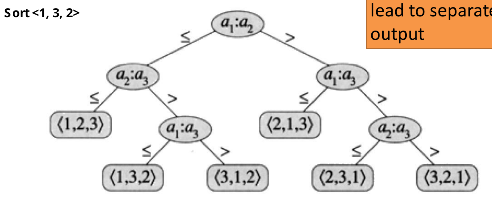
The first level can have up to $n$ children, all nodes in the next level can have $n-1$ children, and so on. This leads to a total number of nodes $n * n-1 … * 1 = n!$. This means we know this means the height of the tree is at least $log(n!)$. Since $log(n!) \ge log(n/2)^{n/2}$. This is $\Omega(n log n)$.
We have shown that no solution can be faster than $O(n log n)$.